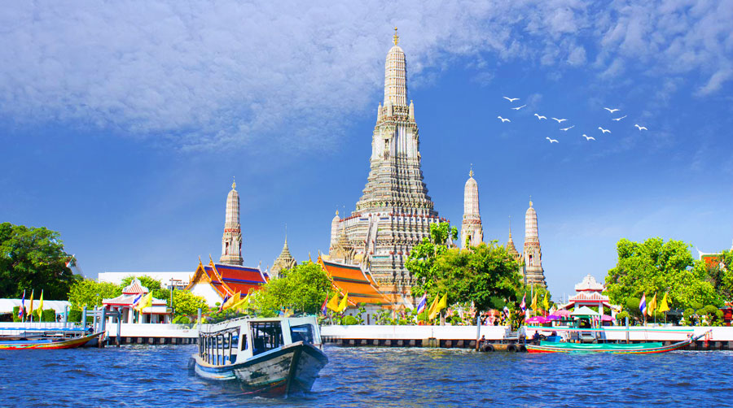
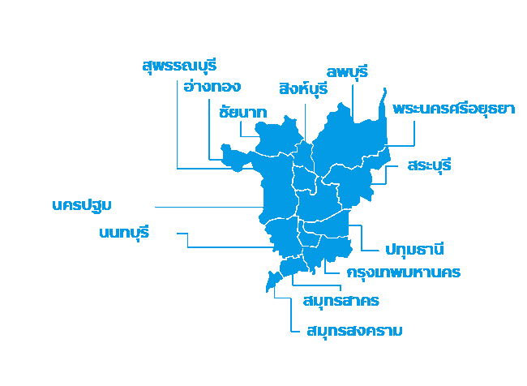
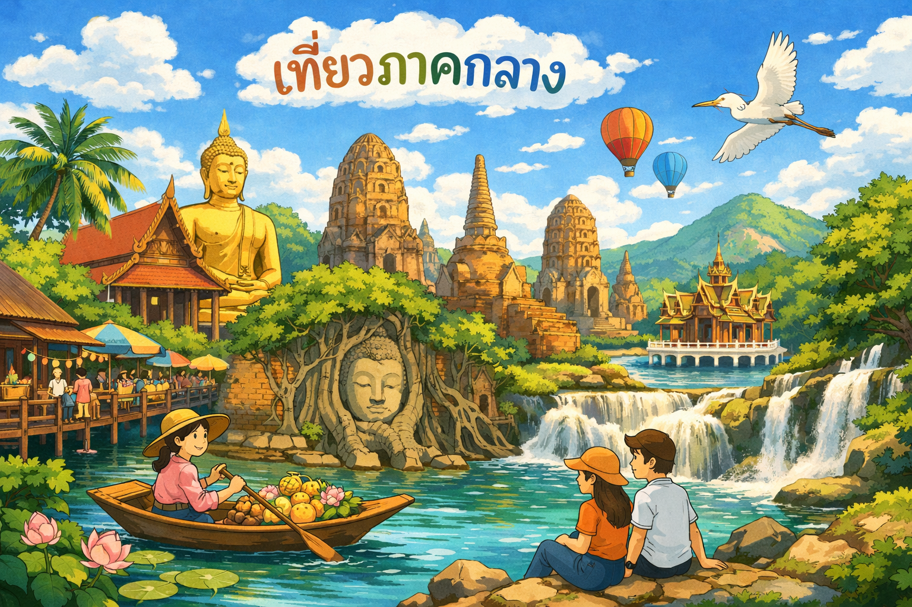
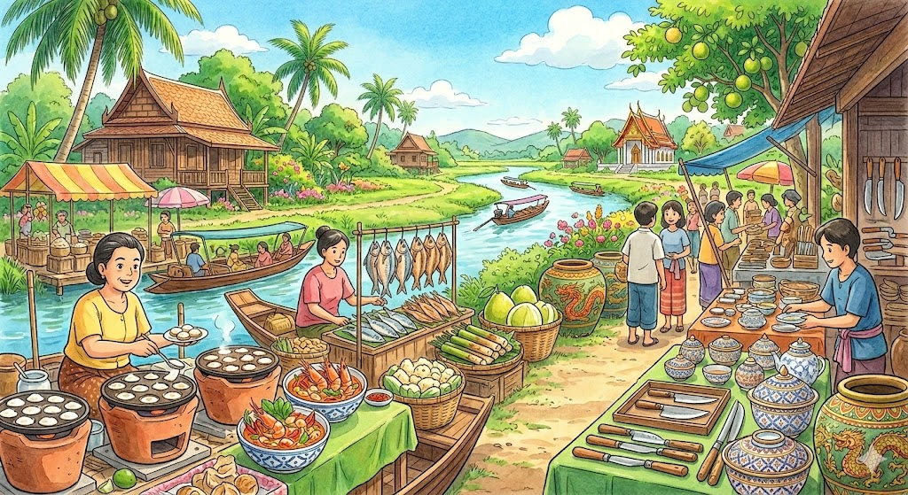
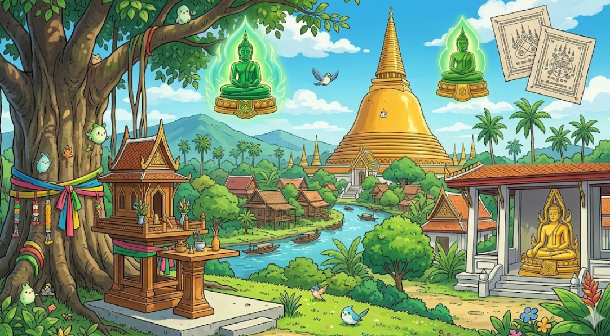

ภาคกลาง มีพื้นที่เป็นที่ราบลุ่ม เป็นแหล่งปลูกข้าวและพืชอื่น ๆ โดยมีแม่น้ำเจ้าพระยาเป็นแหล่งน้ำสำคัญ สถานที่ท่องเที่ยวน่าสนใจสองฝั่งแม่น้ำเจ้าพระยาส่วนใหญ่จะเป็นวัดเก่าแก่ ซึ่งมีความสำคัญทางประวัติศาสตร์ มีความสวยงามทางด้านสถาปัตยกรรมและศิลปะ


ภาคกลางเป็นภูมิภาคที่มีความสำคัญทางเศรษฐกิจ การคมนาคม และวัฒนธรรมของประเทศไทย...
โดยมีลักษณะภูมิประเทศเป็นที่ราบลุ่มแม่น้ำเจ้าพระยา เหมาะแก่การเกษตร...


